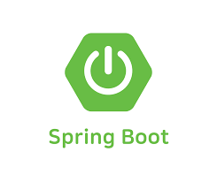

스프링부트(SpringBoot)
간단한 소개
자바 언어를 기반으로 한 오픈 소스 프레임워크로, 웹 애플리케이션 및 마이크로서비스를 빠르고 쉽게 구축할 수 있도록 지원합니다. 스프링 부트는 스프링 프레임워크의 확장판으로, 스프링의 기능을 보다 간편하게 사용할 수 있도록 만들어졌습니다.
장점
- 스타터 패키지: 필요한 기술 스택에 맞게 스타터 패키지를 선택하여 라이브러리 의존성을 자동으로 관리할 수 있습니다.
- 자동 설정: 애플리케이션에 필요한 설정을 자동으로 감지하고 적용합니다.
- 내장 서버: 스프링 부트는 내장된 톰캣, 제티 등의 서버를 사용하여 애플리케이션을 실행할 수 있습니다. 이를 통해 별도의 서버 설정이나 배포 과정이 필요 없으며, 개발 환경에서 빠르게 애플리케이션을 실행할 수 있습니다.
- 스프링 생태계와 통합: 스프링 생태계의 다양한 기술과 라이브러리와 원활하게 통합됩니다.
스프링부트 사이트 바로가기
spring.io플러터(flutter)
간단한 소개
구글에서 개발한 오픈 소스 UI 프레임워크로서, 모바일, 웹 및 데스크톱 애플리케이션을 빌드하기 위한 도구입니다.
장점
- 크로스 플랫폼 개발: 단일 코드베이스로 iOS, Android 및 웹 애플리케이션을 개발할 수 있도록 지원합니다. 이는 개발자가 애플리케이션을 여러 플랫폼에 대해 따로 개발할 필요 없이 통합하여 개발할 수 있음을 의미합니다.
- 고성능 UI: 네이티브 앱과 유사한 높은 성능의 UI를 제공합니다. 이는 화면 렌더링 및 애니메이션의 부드러움을 보장하며, 사용자 경험을 향상시킵니다.
- 강력한 디자인: 플러터는 Material Design과 Cupertino 스타일의 위젯을 포함하고 있어, 각 플랫폼의 네이티브 디자인을 준수하여 애플리케이션의 외관과 느낌을 일관되게 유지할 수 있습니다.
- 빠른 개발 속도: 플러터는 핫 리로딩(Hot Reload) 기능을 제공하여 개발자가 코드 변경을 즉시 확인할 수 있도록 합니다. 이는 개발자가 애플리케이션을 빠르게 반복하여 개발할 수 있도록 도와줍니다.
플러터 사이트 바로가기
flutter-ko
AWS
간단한 소개
아마존닷컴의 하위 기업으로, 클라우드 컴퓨팅 서비스를 제공하는 세계적으로 유명한 플랫폼입니다. AWS는 기업이나 개발자가 인터넷을 통해 컴퓨팅 파워, 스토리지, 데이터베이스 및 다른 IT 리소스에 대한 액세스를 얻을 수 있도록 합니다.
장점
- 컴퓨팅 파워: 가상 서버를 포함한 다양한 유형의 컴퓨팅 리소스를 제공하여 애플리케이션을 실행할 수 있습니다.
- 스토리지: 파일, 데이터베이스, 백업 등을 위한 스토리지 서비스를 제공합니다.
- 데이터베이스: 관계형 및 NoSQL 데이터베이스를 포함하여 다양한 데이터베이스 서비스를 제공합니다.
- 네트워킹: 가상 네트워크를 설정하고 관리하며, 로드 밸런싱, DNS 관리 등을 지원합니다.
- 개발 도구 및 관리: 애플리케이션을 빌드, 배포 및 관리하기 위한 다양한 도구와 서비스를 제공합니다.